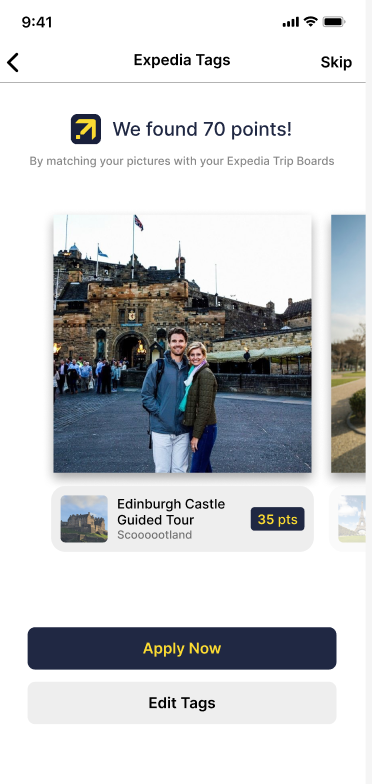
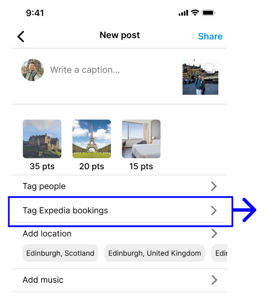
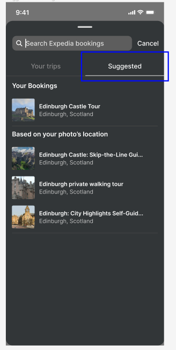

Why it works
We used Instagram’s already existing features such as people tags and location tags as inspiration to make sure these new “Expedia trip tags” would smoothly integrate into Instagram's established design language. We also wanted to make sure Expedia branding was clear with the trip tags and “Add to Trip Board” so people could develop more trust in the brand.
Implementing these along with preexisting user tags also makes them discoverable to those who might not know the feature exists. A user may tap the photo with the intention of seeing who else was tagged in it to also find the Expedia tag and start exploring from there.
During our paper prototype testing, we found that users disliked the Instagram webpage popup feature; while incorporating it made sense with their model of Instagram, they would immediately close out. Therefore, we wanted to make this be an add-on if they wanted to view more information but not make it necessary in order for users to save things to their Trip Boards.
To support this method of getting inspiration from instagram, here’s how the tags get to the posts in the first place:
If the user has already connected Expedia to their instagram account, then Instagram will have access to all of their Expedia trip boards and the experiences booked through there. Since Instagram already can see the location where photos were taken, the Expedia tags will automatically be applied to the selected photos that match up with the location of the bookings.
current Instagram screens

Introduced step after adding filters
The user will go through the regular posting process, selecting the photos they want to share and then applying filters if desired. After selecting photos and applying filters, the user has the opportunity to add Expedia tags to their post. The tags are automatically detected from the Expedia account data. Also, each tag added will give the user points towards their Expedia account. Here, users can swipe through their pictures to make sure the tags have been applied correctly, and easily edit them if they're mismatched.
Rationale: Because this would theoretically be a new process in people's social media mental models, we wanted to make it as approachable and upfront as possible. Users can skip the process if they're uninterested, but if they already used Expedia to book the trip, then the work is done for whoever is posting, making it as easy as possible to get free Expedia points to redeem later.
If the listings are correct, the user can press "Apply Now" and the tags added will appear on the finals creen before positng. The option to edit them after being applied is also available as shown on the right.
The "Tag Expedia bookings" button would be visible regardless of if the user's account is linked through Expedia to increase awareness even if a user might not be interested. This would also be a pathway for people to connect their accounts if they aren't already - leading to onboarding of the feature.
Rationale: Because this feature is very similar to the function of tagging other Instagram users in a post, we wanted to group the two features together and make our new feature discoverable for new members.

Our version of tagging with the added tab at the bottom
Tagging another user on Instagram (reference design)
Tagging Expedia listings will happen in the same place that users are tagged in. This means the same interactions will apply - tapping on the tag to remove it, tapping on the photo to add a tag, and swiping to the side to switch pictures. If users are confused where the tag came from, they can press the "Learn more" button which would open a web page (probably in the form of a blog post or video) that introduces the concept of Expedia tags.
Rationale: This allows the Expedia tags to fit with the user's mental model of tagging people and makes the process more familiar. It's very likely that there will be people who want to avoid tagging an Expedia place because they don't want to promote another business. By pairing it with tagged users, it's framed in a way that puts the emphasis on sharing where you went instead of something that's being done for another business so you can have free points because Instagram users are already ailling to tag other people and locations.
Our version of adding Expedia listings

Instagram's add music screen
When users tap on the photo to add listings, they can search by name or look through their different trip boards that are synced with their Expedia account in case people forgot the name of the booking. Uesrs will only be able to add a booking if the location matches the geolocation data attached to the photo so listings can be kept more accurate. Ineligible listings are grayed out to indicate they can't be added. If they're still pressed the following error popup will appear.

Rationale: By reusing Instagram's design system for adding music, this will make it less of a hurdle for Instagram to add this to their system as well. It also works well for our content, and Instagram would just need to get the trip data from the Expedia accounts.
If the user gets to the final posting screen before the app is done checking for bookings, they will be able to see that Instagram has automatically detected locations (after a short loading period). It also tells the user how many Expedia reward points these locations can give them. If the button is pressed, it would lead them back to the summary screen on the right.
Rationale: We didn't want to automatically apply the bookings without the user's approval in case they weren't noticed. It's also made clear that extra action is necessary to apply the points, but it's made to draw them in and make the points seem closer. If the app was still checking, we didn't we didn't want to hold the user up just because of the loading so we moved the process to this screen so that other actions could still be done in the process.